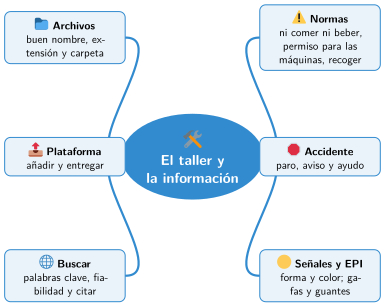

Bloque I · El taller maker
UD01 El taller y la información
Sesiones
- Sesión 1.1 Normas de seguridad del taller
- Sesión 1.2 Seguridad con las máquinas
- Sesión 1.3 Archivos, carpetas y la plataforma de clase
- Sesión 1.4 Buscar información en internet
Al terminar la unidad
Mapa mental de la unidad

✏️ Repasa la unidad con el mapa: tapa una rama y explica en voz alta lo que pone.